Cơ sở toán học cho AI
Bài 05b
Trường Đại học Công nghệ
Đại học Quốc gia Hà Nội
Vấn đề trung tâm. Với phép lặp ${x_{k+1}=x_k-\eta_kg_k},$ xác định kèm chứng minh: dãy hội tụ theo nghĩa nào, nhanh đến đâu, dưới giả thiết nào, với bước nào.
$g_k$ là $\nabla f(x_k)$ trong phương pháp hạ gradient (GD), một dưới gradient (subgradient) khi $f$ lồi nhưng không khả vi, hoặc gradient trên một nhóm mẫu (Bài 05) trong hạ gradient ngẫu nhiên (SGD).
Luận đề. Mọi chứng minh hội tụ trong bài dùng một khuôn: lập bất đẳng thức giữa $x_k$ và $x_{k+1},$ nối các bất đẳng thức đó qua mọi bước, rồi chọn $\eta_k.$ Giả thiết quyết định bất đẳng thức đó và cách nối.
Với nghiệm $x^*$ và $f^*=f(x^*)\text{:}$ sai số giá trị ${e_k=f(x_k)-f^*},$ khoảng cách ${d_k=\lVert x_k-x^*\rVert}.$
Ví dụ C. $f(x)=\tfrac12(3x_1^2+7x_2^2),$ ${x^*=0},$ ${f^*=0};$ GD bước $\tfrac17$ từ ${x_0=(2,4)}.$
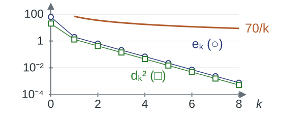
Ví dụ A. ${J(\theta)=\tfrac16\sum_i(\theta-y_i)^2},$ ${y=(-1,1,3)},$ $\theta^*=1;$ SGD bước $0{,}1,$ mỗi bước một mẫu, $\theta_0=0.$
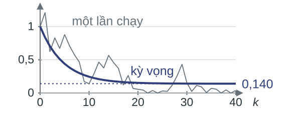
Ví dụ C: $e_k,$ $d_k^2$ giảm theo tỉ số $\tfrac{16}{49}$ từ $k=1,$ cận $O(1/k)$ của Bài 04 chỉ giảm như $70/k.$ Ví dụ A: ${\mathbb E(\theta_k-1)^2}$ giảm về $0{,}140.$ Một khẳng định hội tụ phải nêu đại lượng được đo và kiểu giảm.
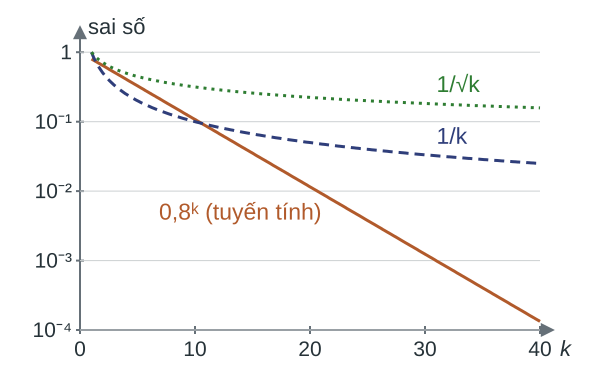
Trên thang logarit, dãy dạng $Cq^k$ là đường thẳng; $C/k$ và $C/\sqrt k$ cong và phẳng dần.
Định nghĩa (dạng hội tụ). Cho $f$ có điểm cực tiểu $x^*,$ $f^*=f(x^*).$ Dãy lặp $(x_k)$ hội tụ
Định nghĩa (tốc độ). Dãy $u_k\ge0$ hội tụ tuyến tính (linear convergence) với hệ số $q\in(0,1)$ nếu có $C>0$ để $u_k\le Cq^k$ với mọi $k;$ hội tụ với tốc độ $O(1/k^p)$ (dưới tuyến tính, sublinear), $p>0,$ nếu có $C>0$ để $u_k\le C/k^p$ với mọi $k\ge1.$
| Ký hiệu | Nghĩa |
|---|---|
| $x_k,$ $\eta_k,$ $g_k$ | điểm lặp, bước, vectơ cập nhật |
| $x^*,$ $f^*$ | điểm cực tiểu, giá trị tối ưu $f(x^*)$ |
| $e_k,$ $d_k$ | $f(x_k)-f^*,$ $\lVert x_k-x^*\rVert$ |
| $D$ | $\lVert x_0-x^*\rVert$ |
| $K$ | số bước |
| $L,$ $\mu,$ $\kappa$ | hằng số của H2, H3; $\kappa=L/\mu$ |
Trong H1–H3, $f$ khả vi và bất đẳng thức đúng với mọi $x,y\in\mathbb R^n;$ chuẩn Euclid. H5–H7 được nêu ở phần D, E, F.
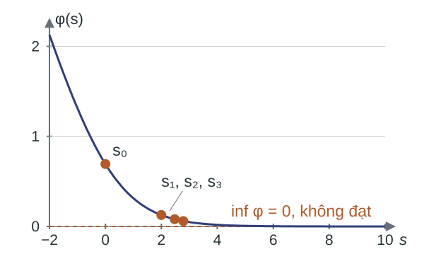
Ví dụ (mất mát logistic). ${\phi(s)=\log(1+e^{-s})}$ lồi, $0<\phi''(s)\le\tfrac14$ nên $L=\tfrac14.$ GD bước $1/L=4$ từ $s_0=0\text{:}$ $\phi(s_k)\to0$ trong khi $s_k\to\infty.$
Ký hiệu. $f_{\inf}=\inf_xf(x)$ là cận dưới đúng (infimum) của $f;$ với $\phi,$ ${\phi_{\inf}=\inf_s\phi(s)=0}$ không đạt.
Ví dụ (nghiệm không duy nhất). $f(x)=x_1^2$ trên $\mathbb R^2\text{:}$ mọi điểm $(0,c)$ là nghiệm, nên “$x_k\to x^*$” phụ thuộc cách chọn $x^*.$
Nối $e_k$ với $d_k$ cần nghiệm tồn tại (H4); độ cong chặn trên (H2) cho cận của $e_k$ theo $d_k,$ chặn dưới $\mu>0$ (H3) đủ cho chiều ngược lại và kéo theo nghiệm duy nhất.
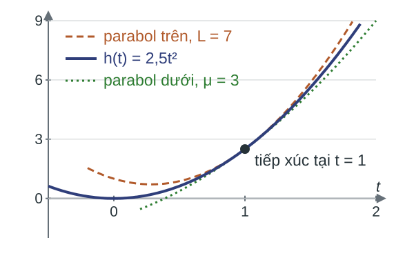
Lát cắt $h(t)=2{,}5t^2$ của Ví dụ C, ${f(x)=\tfrac12(3x_1^2+7x_2^2)},$ theo hướng $(1,1)/\sqrt2$ nằm dưới parabol độ cong $L=7$ tiếp xúc tại ${t=1};$ parabol dưới, $\mu=3,$ ứng với H3.
Bổ đề BĐ1 (cận trên bậc hai). Giả sử $f$ khả vi và thỏa H2. Với mọi $x,y\in\mathbb R^n,$
Chứng minh. Đặt $u=y-x;$ tích phân dọc đoạn $[x,y],$ rồi dùng Cauchy–Schwarz và H2:
Thế ${y=x-\eta\nabla f(x)}$ vào BĐ1 được bổ đề giảm; lấy $\eta=1/L$ và dùng $f_{\inf}\le f(y)$ được BĐ2.
Bổ đề giảm (descent lemma). Giả sử H2, $\eta>0.$ Với mọi $x,$
Bổ đề BĐ2 (chặn chuẩn gradient). Giả sử H0, H2. Với mọi $x\text{:}$ ${\lVert\nabla f(x)\rVert^2\le2L\bigl(f(x)-f_{\inf}\bigr)},$ vì với ${\eta=1/L}\text{:}$
Ví dụ C ($f(x)=\tfrac12(3x_1^2+7x_2^2),$ $L=7$) tại $x_0=(2,4)\text{:}$ $f(x_0)=62,$ $f_{\inf}=0,$ ${\lVert\nabla f(x_0)\rVert^2=820}\le{2\cdot7\cdot62=868};$ bước $\tfrac17$ cho ${f(x_1)\le62-\tfrac{820}{14}=\tfrac{24}7},$ thực tế $f(x_1)=\tfrac{96}{49}.$
BĐ1 (tại $x^*$) chặn $e$ theo $d,$ BĐ2 chặn $\lVert\nabla f\rVert$ theo $e;$ thêm H3 cho các chiều ngược lại.
Bổ đề BĐ3 (cận của hàm lồi mạnh). Giả sử H3, H4. Khi đó $x^*$ là điểm cực tiểu duy nhất, và với mọi $x,$ đặt ${d=\lVert x-x^*\rVert},$ ${e=f(x)-f^*}\text{:}$
Chứng minh.
Ví dụ C ($f(x)=\tfrac12(3x_1^2+7x_2^2),$ $\mu=3$) tại $x_0=(2,4)\text{:}$ ${d^2=20},$ ${e=62},$ ${\lVert\nabla f(x_0)\rVert^2=820};$ ${30\le62\le\tfrac{820}6\approx136{,}7};$ ${d\approx4{,}47\le\tfrac23\sqrt{820}\approx19{,}1}.$
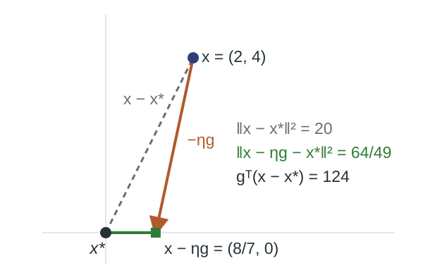
Bổ đề BĐ4. Với mọi $x,g\in\mathbb R^n,$ $\eta>0\text{:}$
Hệ quả của H1. Với H1, H4: $\nabla f(x)^T(x-x^*)\ge f(x)-f^*.$
Trực quan. $g^T(x-x^*)$ đo phần của $g$ hướng về $x^*.$ Khi tích này dương và $\eta$ đủ nhỏ, $2\eta\,g^T(x-x^*)$ lớn hơn $\eta^2\lVert g\rVert^2,$ nên khoảng cách giảm.
Ví dụ C tại $x_0,$ bước $\tfrac17\text{:}$ $\nabla f(x_0)^T(x_0-x^*)=124\ge62;$ $d_1^2=\tfrac{64}{49}<20.$
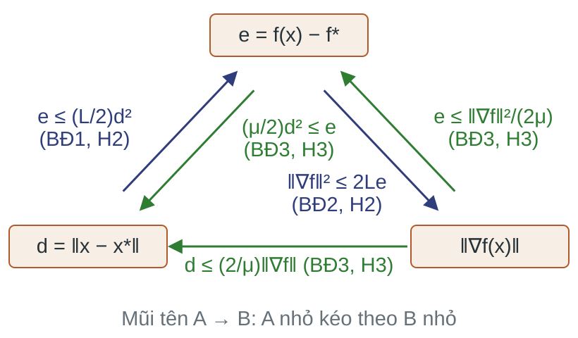
Dưới H2 và H3, ba đại lượng chặn lẫn nhau, sai khác hằng số:
Thiếu giả thiết thì có phản ví dụ:
Câu hỏi:
Ở Ví dụ C, cận $70/k$ của định lý $O(1/k)$ ở Bài 04 lớn hơn nhiều so với $e_k=6(16/49)^k.$
Ba khoảng trống của định lý $O(1/k)\text{:}$
Phần này xét $x_{k+1}=x_k-\tfrac1L\nabla f(x_k)$ dưới H1, H2 và H4 ($f$ đạt cực tiểu tại $x^*$).
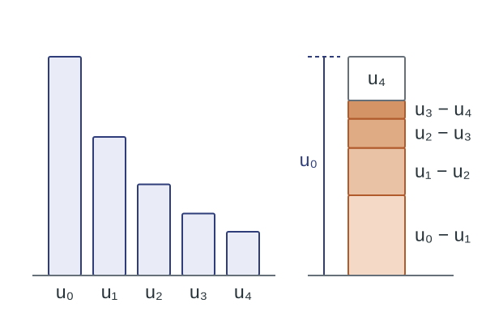
Mẫu 1 (tổng lồng, telescoping sum). Nếu $u_k\ge0$ và $p_{k+1}\le c\,(u_k-u_{k+1})$ thì
Mẫu 2 (co). Nếu $u_{k+1}\le q\,u_k$ với $0<q<1$ thì $u_k\le q^ku_0.$
Nhận xét (hàm thế, potential function). $u_k$ đóng vai một hàm thế $V_k\ge0$ thỏa $V_{k+1}\le V_k-P_k+N_k,$ với tiến bộ $P_k\ge0$ và nhiễu $N_k\ge0.$ Các phần sau đổi $V,$ $P_k$ và $N_k.$
Định lý (T1). Đầu vào: $f$ thỏa H1, H2, H4; điểm đầu $x_0\in\mathbb R^n,$ $D=\lVert x_0-x^*\rVert.$
Bước: $x_{k+1}=x_k-\tfrac1L\nabla f(x_k).$
Kết luận: $e_k$ bị chặn với mọi $k\ge1,$ và $d_{k+1}\le d_k$ với mọi $k\ge0\text{:}$
Hệ quả (T1'). Với bước hằng $0<\eta\le1/L\text{:}$ $\;e_k\le\tfrac{D^2}{2\eta k}.$
Ý tưởng: dùng BĐ4 đưa $e_{k+1}$ về hiệu $d_k^2-d_{k+1}^2$ rồi áp mẫu 1.
Cận của T1 phải đúng cho $f(x)=x_1^2$ trên $\mathbb R^2$ (lồi, $L$-trơn, không lồi mạnh), nên không thể chứa $\mu.$ Hàm có $\mu>0$ cần một bất đẳng thức một bước khác.
Định lý (T2a, T2b). Đầu vào: $f$ thỏa H2, H3, H4 với $0<\mu\le L;$ điểm đầu $x_0.$
Bước: $x_{k+1}=x_k-\tfrac1L\nabla f(x_k).$
Kết luận: với mọi $k\ge0,$ $\kappa=L/\mu,$
Ý tưởng: thay cận tuyến tính của H1 bằng cận bậc hai của H3, để bất đẳng thức một bước thành phép co.
T2a (mẫu 2 với $u_k=d_k^2$):
T2b (mẫu 2 với $u_k=e_k$): bổ đề giảm và BĐ3, $\lVert\nabla f(x_k)\rVert^2\ge2\mu e_k,$ cho
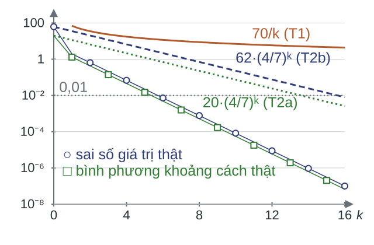
| $k$ | $70/k$ | $62(\frac47)^k$ | $e_k$ thật |
|---|---|---|---|
| 1 | 70 | 35,4 | 1,96 |
| 5 | 14 | 3,78 | 0,0223 |
| 10 | 7 | 0,230 | $8{,}3\cdot10^{-5}$ |
Số bước để $e_k\le0{,}01\text{:}$ theo T1 cần $7000,$ theo T2b cần $16,$ thực tế cần $6.$
Cận $O(1/k)$ bỏ qua $\mu=3;$ cận tuyến tính đúng dạng nhưng hệ số co $\tfrac47$ chậm hơn hệ số thật $\tfrac{16}{49}.$
Định lý (T2', chỉ phát biểu). Đầu vào: $f$ thỏa H2, H3 trên tập mức $\{x: f(x)\le f(x_0)\};$ quay lui Armijo với $0<\alpha<\tfrac12,$ $0<\beta<1.$
Kết luận: $e_k\le c^ke_0,$ với
Giới hạn. T1, T2 và T2' đều cần gradient Lipschitz. Hàm trị tuyệt đối và mất mát hinge không có hằng số $L$ hữu hạn.
Câu hỏi:
Cho $f(x)=\tfrac12(3x_1^2+7x_2^2),$ $x_0=(2,4),$ $\mu=3,$ $L=7.$
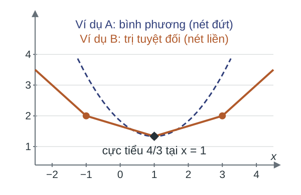
Ví dụ B. Cùng ba quan sát $-1,1,3$ của Ví dụ A, đổi mất mát:
Hồi quy độ lệch tuyệt đối nhỏ nhất (least absolute deviations) và mất mát hinge có cùng cấu trúc.
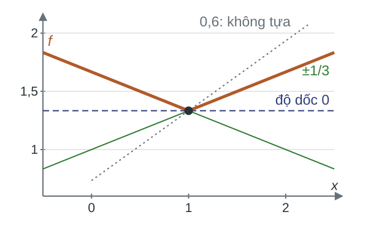
Ví dụ B. $f(x)\ge\tfrac43+s(x-1)$ với mọi $x$ khi và chỉ khi $s\in[-\tfrac13,\tfrac13].$
Định nghĩa. $f:\mathbb R^n\to\mathbb R$ lồi. Vectơ $g\in\mathbb R^n$ là một dưới gradient (subgradient) của $f$ tại $x$ nếu
Tập các dưới gradient là dưới vi phân (subdifferential) $\partial f(x);$ $0\in\partial f(x^*)$ khi và chỉ khi $x^*$ là điểm cực tiểu.
H1 dạng dưới gradient. $f$ lồi trên $\mathbb R^n;$ khi đó $\partial f(x)\neq\emptyset$ với mọi $x,$ và cùng H4, mọi $g\in\partial f(x)$ thỏa $g^T(x-x^*)\ge f(x)-f^*.$
Thuật toán. Đầu vào $x_0,$ bước $\eta_k>0,$ số bước $K.$ Với $k<K\text{:}$ chọn $g_k\in\partial f(x_k),$ đặt $x_{k+1}=x_k-\eta_kg_k.$ Đầu ra: lặp tốt nhất (best iterate) $\arg\min_{k<K}f(x_k),$ hoặc trung bình lặp (iterate averaging) $\bar x_K=\sum_{k<K}\eta_kx_k\big/\sum_{k<K}\eta_k.$
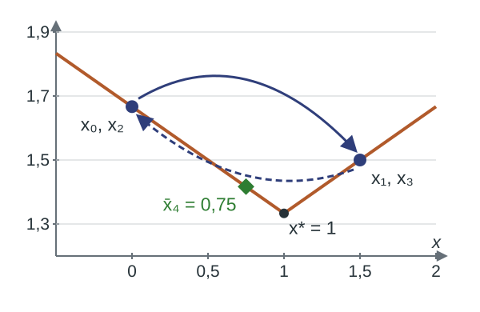
Ví dụ B, $x_0=0,$ $\eta=4{,}5\text{:}$ $x_k=0;\,1{,}5;\,0;\,1{,}5.$
Ở bước thứ hai $f$ tăng từ $1{,}5$ lên $\tfrac53.$
Trung bình $\bar x_4=0{,}75$ có sai số $\tfrac1{12},$ nhỏ hơn sai số của mọi điểm lặp (nhỏ nhất là $\tfrac16$).
Định lý (T3). Đầu vào: $f$ lồi (H1 dạng dưới gradient), đạt cực tiểu tại $x^*$ (H4); các dưới gradient dùng tại điểm lặp thỏa
H5. $\lVert g_k\rVert\le G$ với mọi $k;$
điểm đầu $x_0,$ bước $\eta_k>0,$ số bước $K\ge1.$
Kết luận: lặp tốt nhất và trung bình lặp có cùng cận,
Bổ đề BĐ5 (Jensen). $f$ lồi, $\lambda_k\ge0,$ $\sum_{k<K}\lambda_k=1\text{:}$ $\;f\bigl(\sum\lambda_kx_k\bigr)\le\sum\lambda_kf(x_k).$
So với chứng minh T1: không có bổ đề giảm, nên số hạng $\eta_k^2G^2$ không bị triệt tiêu.
Bước hằng $\eta$ trong $K$ bước: cận của T3 bằng
dấu bằng tại $\eta=D/(G\sqrt K).$
Điều kiện Robbins–Monro: $\sum_k\eta_k=\infty,$ $\sum_k\eta_k^2<\infty$ (ví dụ $\eta_k=\tfrac c{k+1}$) làm cận của T3 tiến về 0.
Ví dụ B, $x_0=0,$ $D=G=1,$ $K=4,$ bước tối ưu $\eta=\tfrac12\text{:}$ $x_k=0,\tfrac16,\tfrac13,\tfrac12.$
| cận T3 | lặp tốt nhất ($x_3=\tfrac12$) | trung bình lặp ($\bar x_4=\tfrac14$) | |
|---|---|---|---|
| sai số $e$ | $0{,}5$ | $\tfrac16$ | $\tfrac14$ |
Câu hỏi:
Cho $f(x)=\tfrac13\bigl(\lvert x+1\rvert+\lvert x-1\rvert+\lvert x-3\rvert\bigr)$ (Ví dụ B).
với $I_{k,r}$ là chỉ số thứ $r$ của nhóm ở bước $k,$ lấy đều có hoàn lại.
Ví dụ A, bước $0{,}1,$ nhóm một mẫu, $\theta_0=0\text{:}$ $\theta_1=0{,}1\,y_{I_{0,1}}\in\{-0{,}1;\ 0{,}1;\ 0{,}3\}$ với $y_i\in\{-1,1,3\},$ mỗi giá trị có xác suất $\tfrac13.$
Bảo đảm cho SGD là phát biểu về kỳ vọng, có điều kiện theo các chỉ số nhóm đã chọn ở các bước trước.
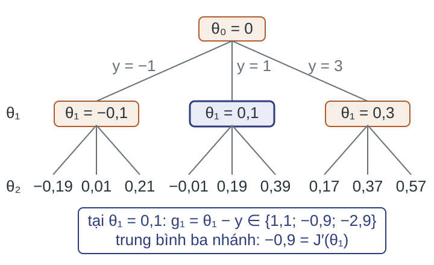
Ví dụ A. Tại nút $\theta_1=0{,}1\text{:}$ trung bình của $g_1=\theta_1-y$ trên ba nhánh là $-0{,}9=J'(\theta_1).$ Ở mức $\theta_1$ có $\mathbb E(\theta_1-1)^2\approx0{,}837.$
Định nghĩa. $\mathcal F_k$ là thông tin gồm các chỉ số nhóm $I_0,\dots,I_{k-1}.$ Khi biết $\mathcal F_k$ thì biết $x_k;$ nhóm $I_k$ độc lập với $\mathcal F_k.$ Kỳ vọng có điều kiện (conditional expectation) $\mathbb E[Z\mid\mathcal F_k]$ là trung bình của $Z$ trên các nhánh con của nút hiện tại.
Tính chất tháp (tower property). $\mathbb E\bigl[\mathbb E[Z\mid\mathcal F_k]\bigr]=\mathbb EZ;$ đại lượng xác định bởi $\mathcal F_k$ ra ngoài $\mathbb E[\cdot\mid\mathcal F_k].$ Kiểm trên cây: $\mathbb E[(\theta_2-1)^2\mid\theta_1]=1{,}007;\ 0{,}683;\ 0{,}424,$ trung bình $0{,}704=\mathbb E(\theta_2-1)^2.$
Bổ đề (tách phương sai). Dưới H6,
Định lý (T4). Đầu vào: $f$ thỏa H1 (dạng dưới gradient), H4; $g_k$ thỏa H6, H6a; bước $\eta_k>0$ cho trước, không phụ thuộc mẫu.
Kết luận:
Bước hằng $\eta=D/(G\sqrt K)$ cho $\mathbb Ef(\bar x_K)-f^*\le DG/\sqrt K.$
Ý tưởng: lấy kỳ vọng có điều kiện từng dòng của chứng minh T3; $x_k$ cố định khi biết $\mathcal F_k.$
Giới hạn của T4. Chỉ chặn trung bình lặp; tốc độ $1/\sqrt K;$ không giải thích vì sao $\mathbb Ed_k^2$ của SGD bước hằng giảm về một giá trị giới hạn dương như Bài 05 quan sát.
Định lý (T5). Đầu vào: $f$ thỏa H2, H3, H4; $g_k$ thỏa H6, H6b; bước hằng $0<\eta\le1/L.$
Kết luận: với mọi $k\ge0,$
Ý tưởng: trong khuôn của T4, thay H6a bằng bổ đề tách phương sai và thay H1 bằng cận bậc hai của H3, được đệ quy co có số hạng cộng.
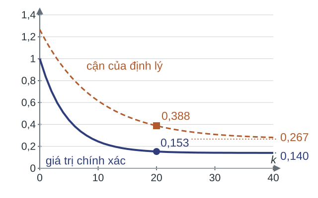
Ví dụ A: $\eta=0{,}1,$ $b=1,$ $\theta_0=0,$ $\mu=L=1,$ $\sigma^2=\tfrac83,$ $D=1.$
Đẳng thức chính xác:
Cận T5: $0{,}9^k+0{,}267.$ Tại $k=20\text{:}$ thật $0{,}153,$ cận $0{,}388.$
Với hàm bậc hai một chiều độ cong $\mu\text{:}$ giá trị giới hạn $\tfrac{\eta\sigma^2}{\mu(2-\eta\mu)}\approx\tfrac{\eta\sigma^2}{2\mu};$ sàn nhiễu của T5 là $\tfrac{\eta\sigma^2}{\mu},$ lớn gần gấp đôi.
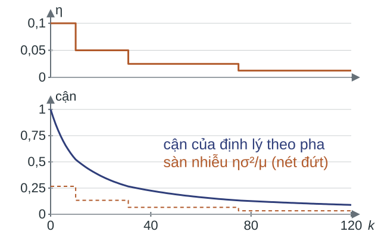
Hệ quả (lịch theo pha, chỉ phát biểu). Giả thiết như T5. Pha $i$ dùng bước $\eta_i=\eta_02^{-i}$ và kéo dài đến khi số hạng co bằng sàn nhiễu $\eta_i\sigma^2/\mu$ của pha. Tổng số bước để $a_k\le\varepsilon$ là
tức $a_k=O(1/k).$
Ví dụ A: bước $0{,}1$ có sàn nhiễu $0{,}267;$ bước $0{,}05$ có sàn nhiễu $0{,}133.$
Định lý (T6, chỉ phát biểu). Đầu vào: H3, H4; $g_k$ thỏa H6, và H6a trên một vùng chứa dãy lặp; bước $\eta_k=\tfrac1{\mu(k+1)}.$
Kết luận: với mọi $k\ge1,$
Ví dụ A ($\mu=1,$ $\eta_k=\tfrac1{k+1}$): $\theta_k$ là trung bình của $k$ mẫu đầu, và $a_k=\tfrac{8}{3k}$ chính xác.
Bổ đề BĐ6 (Markov). $Z\ge0$ ngẫu nhiên, $\varepsilon>0\text{:}$ $\;P(Z\ge\varepsilon)\le\tfrac{\mathbb EZ}{\varepsilon}.$
Nếu $f$ lồi, đạt cực tiểu (H4), $g_k$ thỏa H6 và H6a, bước thỏa điều kiện Robbins–Monro, thì $x_k$ hội tụ gần như chắc chắn (almost surely) tới một điểm cực tiểu; chỉ nêu.
Câu hỏi:
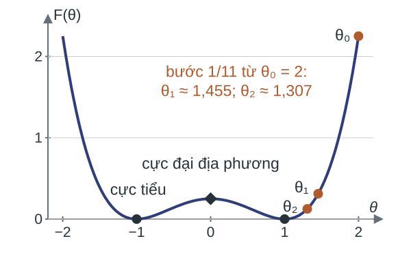
Ví dụ D. $F(\theta)=\tfrac14(\theta^2-1)^2,$ bằng một phần tư hàm bậc bốn hai cực tiểu của Bài 05; $F'(\theta)=\theta^3-\theta.$
Chuẩn gradient $\lVert\nabla f(x_k)\rVert$ chỉ dùng thông tin tại điểm lặp, nên dùng được làm thước đo khi $f$ không lồi.
Mỗi bước GD hạ "độ cao" $f-f_{\inf}$ ít nhất $\tfrac1{2L}\lVert\nabla f\rVert^2$ (bổ đề giảm, không cần lồi). Độ cao ban đầu
chặn tổng các lần hạ, nên chuẩn gradient không thể lớn mãi.
Ví dụ D. $\theta_0=2\text{:}$ $F(2)=\tfrac94=\Delta_0,$ $F'(2)=6.$ Trên $[-2,2],$ $\lvert F''\rvert\le11=L.$ Bước $\tfrac1{11}\text{:}$ $\theta_1=\tfrac{16}{11}\approx1{,}455,$ $F(\theta_1)\approx0{,}311;$ mức hạ $1{,}94\ge\tfrac{36}{22}\approx1{,}64.$
Định lý (T7). Đầu vào: $f$ thỏa H0, H2; điểm đầu $x_0;$ bước $\tfrac1L.$
Kết luận: $\;\displaystyle\min_{k<K}\lVert\nabla f(x_k)\rVert^2\le\frac{2L\Delta_0}K.$
Chứng minh. Cộng bổ đề giảm với $k<K\text{:}$
và vế trái không nhỏ hơn $\tfrac K{2L}\min_{k<K}\lVert\nabla f(x_k)\rVert^2.$
Ví dụ D: dãy GD ở lại $[-2,2],$ nơi $\lvert F''\rvert\le11,$ nên bổ đề giảm áp dụng được ở mọi bước.
Khi đó $\min_{k<K}F'(\theta_k)^2\le\tfrac{2\cdot11\cdot\frac94}{K}=\tfrac{49{,}5}{K}.$
Định lý (T8). Đầu vào: $f$ thỏa H0, H2; $g_k$ thỏa H6, H6b; bước hằng $0<\eta\le1/L.$
Kết luận:
Hệ quả. Cân bằng hai số hạng: $\eta=\min\Bigl\{\tfrac1L,\sqrt{\tfrac{2\Delta_0}{L\sigma^2K}}\Bigr\}$ cho cận
Ý tưởng: lấy kỳ vọng có điều kiện của bổ đề giảm rồi cộng như chứng minh T7.
Chia hai vế cho $\tfrac{\eta K}2$ được T8.
T7, T8 chỉ cho tốc độ dưới tuyến tính của chuẩn gradient. Ở Ví dụ D, $F'(0)=0$ trong khi $F(0)-F_{\inf}=\tfrac14\text{:}$ gradient nhỏ không kéo theo giá trị gần tối ưu.
Ví dụ C (kiểm một hàm lồi mạnh): $\lVert\nabla f\rVert^2=9x_1^2+49x_2^2\ge9x_1^2+21x_2^2=6(f-f_{\inf})$ tại mọi điểm. Gradient chỉ nhỏ khi giá trị đã gần tối ưu.
Giả thiết H7 (điều kiện Polyak–Łojasiewicz, PL). Với mọi $x\text{:}$ $\;\tfrac12\lVert\nabla f(x)\rVert^2\ge\mu\bigl(f(x)-f_{\inf}\bigr),$ $\mu>0.$
Định lý (T9, chỉ phát biểu). Đầu vào: $f$ thỏa H0, H2, H7; $g_k$ thỏa H6, H6b; bước hằng $0<\eta\le1/L.$
Kết luận: với $\Delta_k=f(x_k)-f_{\inf},$
Câu hỏi:
Cho $F(\theta)=\tfrac14(\theta^2-1)^2$ (Ví dụ D).
| Định lý | Giả thiết | Đại lượng | Tốc độ |
|---|---|---|---|
| T1, T1' | H1, H2, H4 | $e_k;$ $d_k$ không tăng | $O(1/k)$ |
| T2a, T2b; T2' | H2, H3, H4 | $d_k^2;$ $e_k$ | tuyến tính |
| T3; T4 | H1 (dạng dưới gradient), H4; H5 hoặc H6, H6a | $\min e_k,$ $f(\bar x_K);$ $\mathbb Ef(\bar x_K)$ | $O(1/\sqrt K)$ |
| T5; T6 | H2, H3, H4, H6, H6b; T6: H3, H4, H6, H6a trên vùng chứa dãy lặp | $a_k$ | tuyến tính tới sàn nhiễu; $O(1/k)$ |
| T7; T8 | H0, H2; T8 thêm H6, H6b | $\min,$ trung bình $\lVert\nabla f\rVert^2$ | $O(1/K);$ $O(1/\sqrt K)$ |
| T9 | H0, H2, H7, H6, H6b | $\mathbb E\Delta_k$ | tuyến tính tới sàn nhiễu |
Bước: $\eta\le1/L$ (T1, T2, T5, T7–T9); $D/(G\sqrt K)$ (T3, T4); $\tfrac1{\mu(k+1)}$ (T6); quay lui (T2').
| Giả thiết đổi | Bất đẳng thức một bước | Cách giải | Thu được |
|---|---|---|---|
| H1, H2, H4 | $e_{k+1}\le\tfrac1{2\eta}(d_k^2-d_{k+1}^2),$ $\eta\le\tfrac1L$ | tổng lồng | T1, T1' |
| thêm H3 | $d_{k+1}^2\le(1-\tfrac\mu L)d_k^2$ | co | T2a, T2b, T2' |
| bỏ H2, H3; thêm H5 | $d_{k+1}^2\le d_k^2-2\eta_ke_k+\eta_k^2G^2$ | tổng lồng | T3 |
| H5 → H6, H6a | như trên, với $\mathbb E[\cdot\mid\mathcal F_k]$ | tổng lồng | T4 |
| thêm H2, H3; H6b | $a_{k+1}\le(1-\eta\mu)a_k+\eta^2\sigma^2$ | giải đệ quy | T5, lịch pha |
| H3, H6a trên vùng | $a_{k+1}\le(1-2\mu\eta_k)a_k+\eta_k^2G^2$ | giải đệ quy (quy nạp) | T6 |
| bỏ H1, H3, H4; thêm H0 | $\mathbb E\Delta_{k+1}\le\mathbb E\Delta_k-\tfrac\eta2\mathbb E\lVert\nabla f\rVert^2+\tfrac{L\eta^2\sigma^2}2$ | tổng lồng | T7, T8 |
| thêm H7 | $\mathbb E\Delta_{k+1}\le(1-\eta\mu)\mathbb E\Delta_k+\tfrac{L\eta^2\sigma^2}2$ | giải đệ quy | T9 |
Tám dòng thuộc sáu bậc; T6, T9 là biến thể của bậc T5 và bậc T7–T8; T2', lịch pha, T6, T9 chỉ phát biểu. Dạng của bất đẳng thức một bước quyết định cách giải.
Kiểm trước khi dùng một định lý: giả thiết đúng toàn cục hay trên một vùng; chặn $G^2$ hay $\sigma^2;$ đại lượng nào được chặn.
Câu hỏi:
Bài tập tổng hợp (học liệu Bài 05b): nhận biết dạng hội tụ; tính cận và chứng minh, trong đó có chứng minh quy nạp cho T6; vận dụng vào chọn bước khi huấn luyện mô hình.
Tài liệu đọc: Boyd và Vandenberghe (2004), §9.1.2, §9.3; Sra, Nowozin và Wright (2011), ch. 4, 5, 13; học liệu Bài 04, mục B.